Fonética y español oral
Fonética articulatoria - las vocales
Joseph V. Casillas
Instituto Franklin: otoño 2015
Precalentamiento
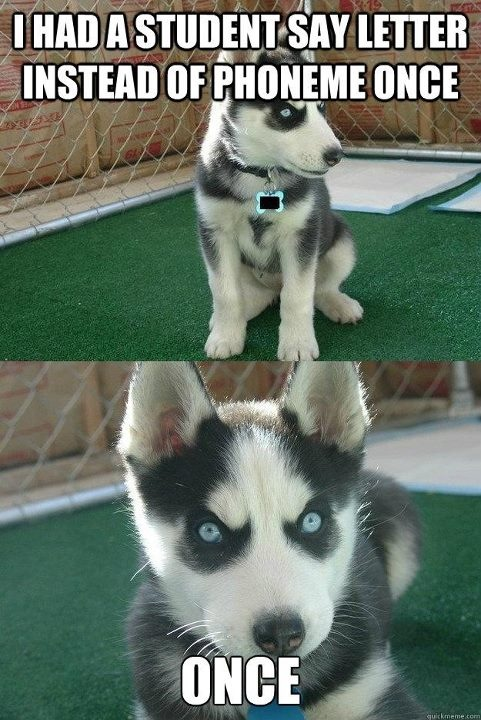
Recordad...
Grafema/dígrafo (letras): Entre comillas
- "a"
- "ch"
- "ll"
Fonema (sonidos): Entre barras
- /a/
- /ʧ/
- /ʝ/
El aparato fonador
El aparato fonador
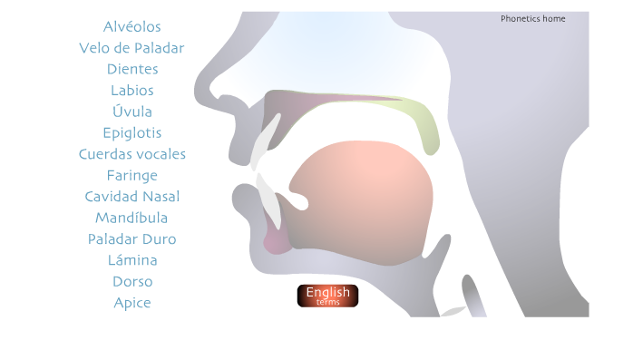
- Aparato fonador: las partes del cuerpo humano donde producimos los sonidos
El aparato fonador
Articulamos los sonidos con los articuladores pasivos y los articuladores activos
- los articuladores pasivos: los articuladores que reciben el contacto
- los articuladores activos: los articuladores que producen el contanto
El aparato fonador
| Articuladores pasivos | Articuladores activos |
|---|---|
| Dientes | Labios: se abren, cierran, redondean |
| Zona alveolar | Lengua: se retrae, adelanta, baja, sube |
| Zona palatal | Mandíbula inferior: se abre |
| Úvula: se extiende hacia atrás o se baja |
Los articuladores pasivos
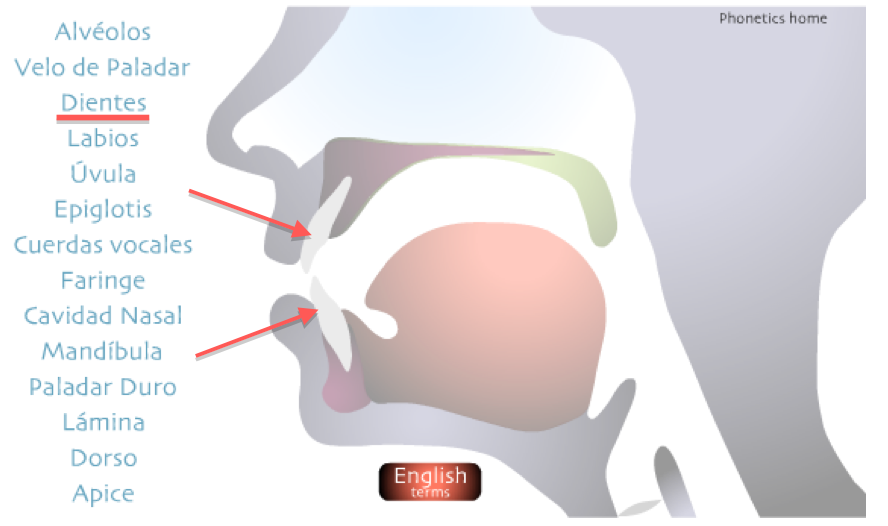
Los articuladores pasivos
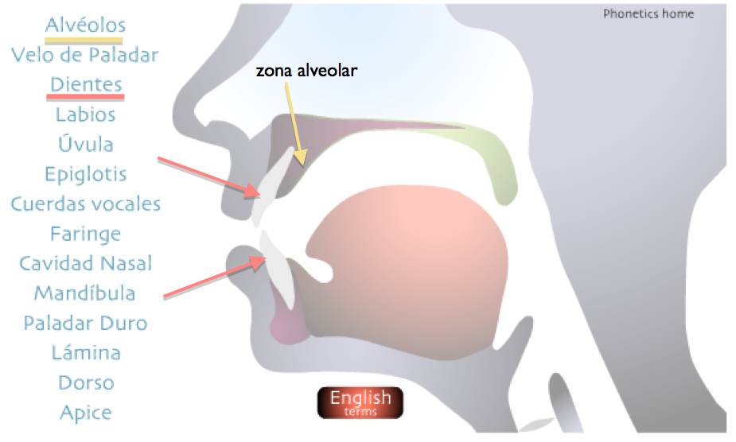
Los articuladores pasivos
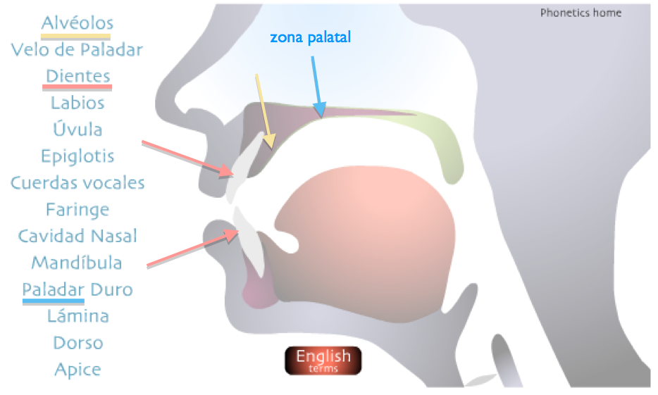
Los articuladores activos
Los articuladores activos
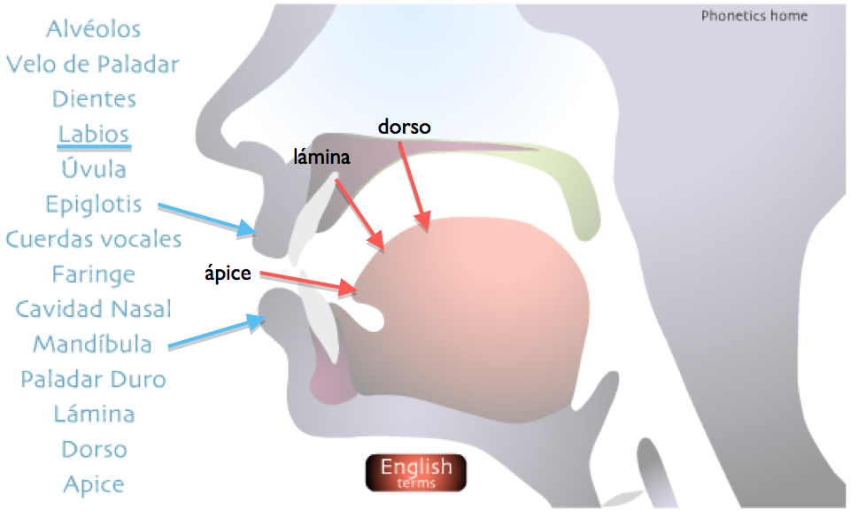
Los articuladores activos
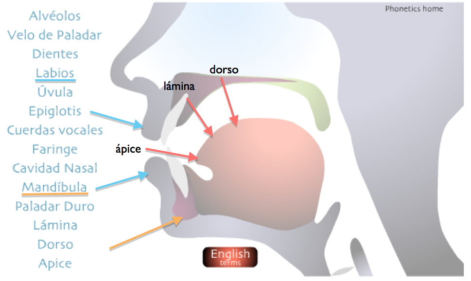
Los articuladores activos
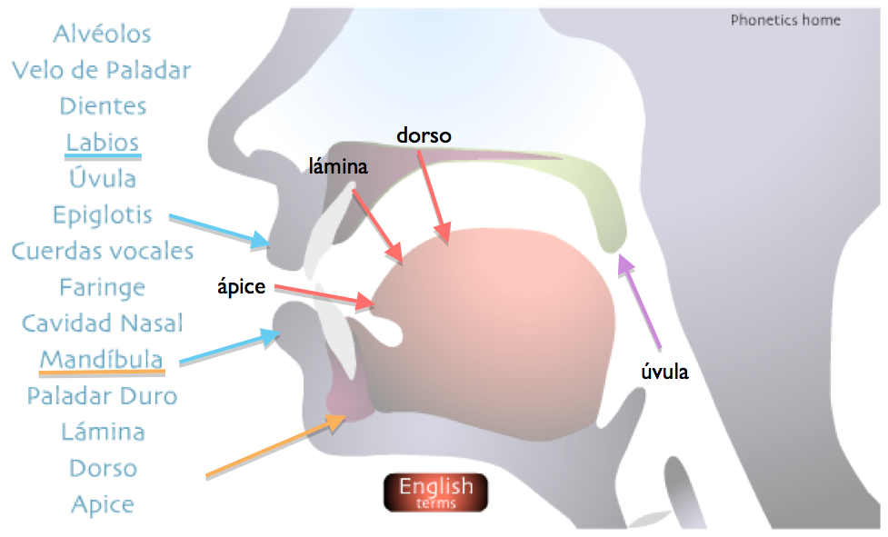
Los articuladores en acción
¿En qué se diferencian?
- Las vocales: ningún obstáculo a la salida del aire
- Las consonantes: algún tipo de obstáculo a la salida del aire
Los fonemas vocálicos
Las vocales
Las vocales monoptongales /a, e, i, o, u/:
Clasificación:
- Posición de la lengua en dos ejes
- horizontal
- vertical
- ¿Podemos decir que las vocales tienen un punto de articulación?
Las vocales
Las vocales
Las vocales monoptongales /a, e, i, o, u/:
Clasificación:
- Posición de la lengua en dos ejes
- horizontal
- vertical
- El redondeamiento de los labios
Las vocales
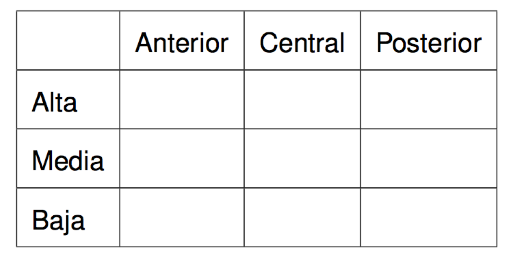
Las vocales
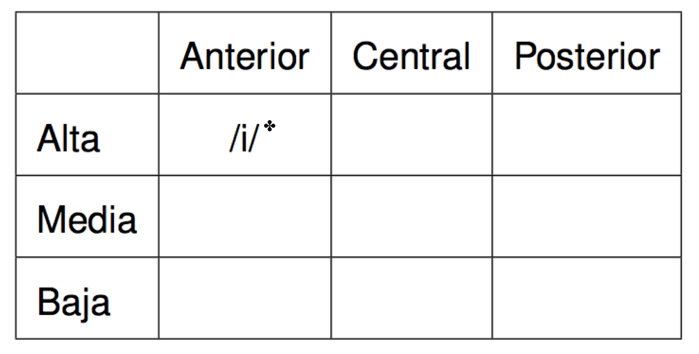
✤
Las vocales
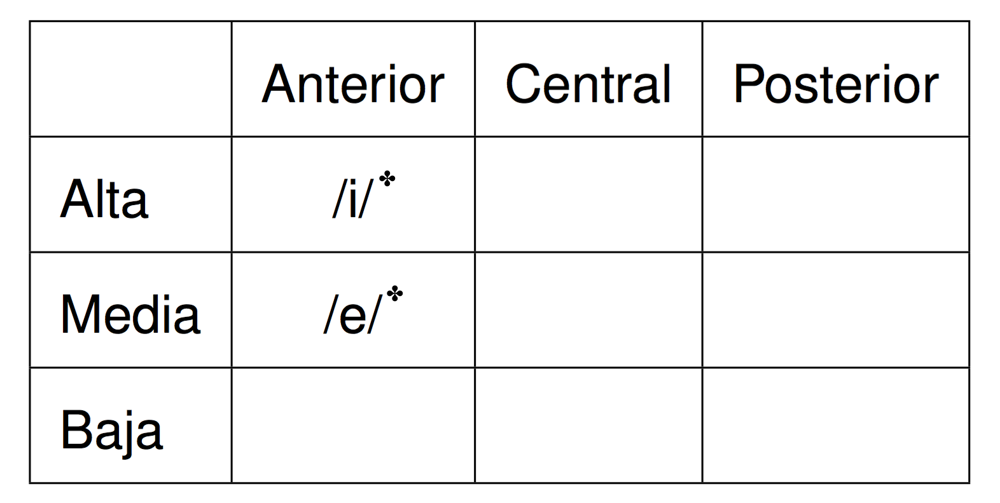
✤
Las vocales
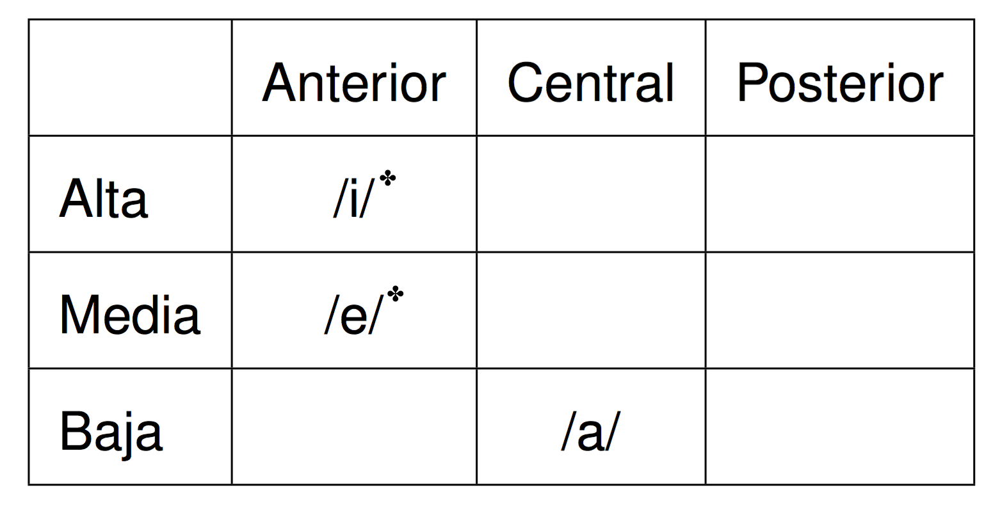
✤
Las vocales
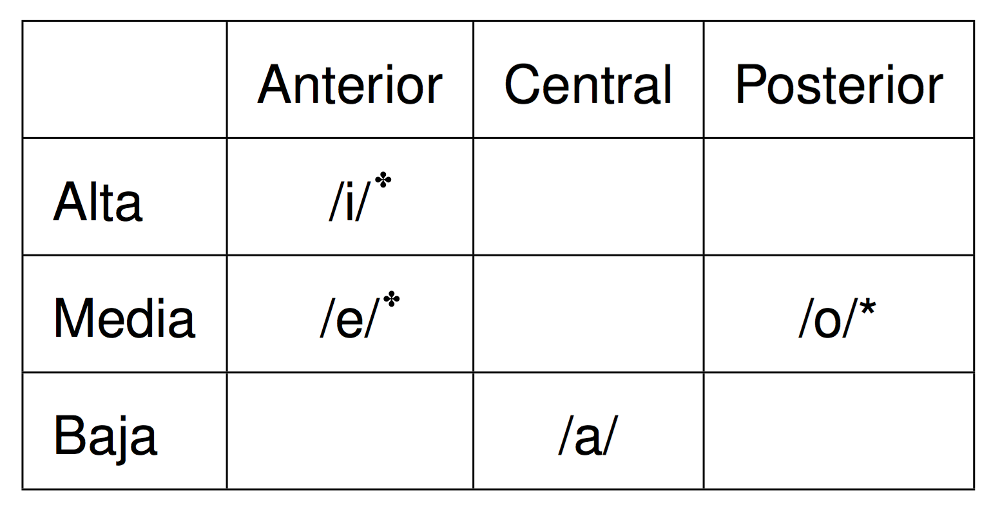
✤
Las vocales

✤
Las vocales
Diferencias con respecto a las vocales del inglés (otra vez)
- Son cortas y tensas
- Nunca llegan a ser diptongos
- No se reducen
Actividad
Con un compañero, describid articulatoriamente las 5 vocales del español
- /i/
- /e/
- /a/
- /o/
- /u/
Actividad
Con un compañero, describid articulatoriamente las 5 vocales del español
- /i/: alta, anterior, estirada
- /e/: media, anterior, estirada
- /a/: baja, central
- /o/: media, posterior, redondeada
- /u/: alta, posterior, redondeada